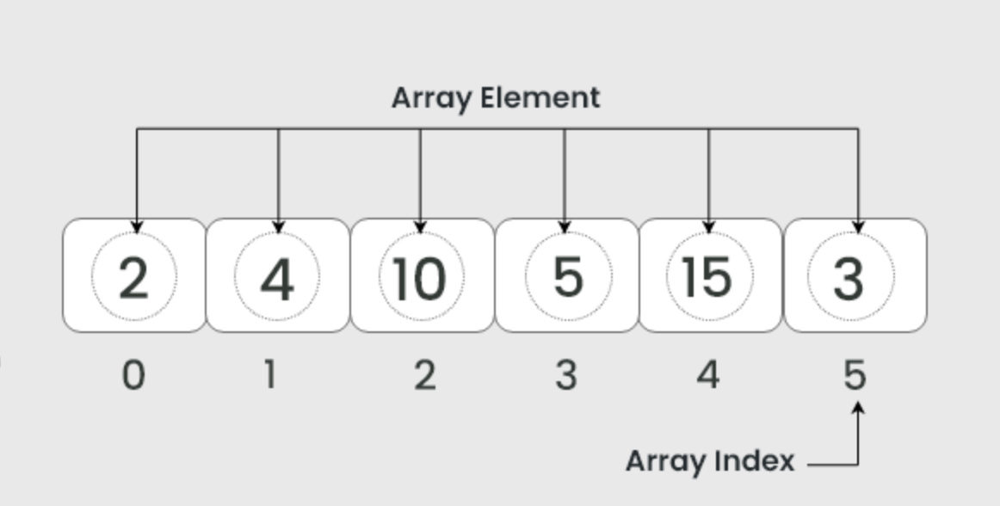

Arrays
An array stores a list of values in a single block of memory. Each element has an index, usually starting at 0. Arrays are great when you want fast access to an item by its position.

When arrays are useful
- Storing a fixed-size list of items (like 100 quiz scores)
- Fast access by index (like getting item #25)
- Working with sorting algorithms that use indices
Common operations (general idea)
- Access by index: often
O(1) - Search in an unsorted array: often
O(n) - Insert/Delete in the middle: often
O(n)(shifting items)
Advantages of Arrays
- Very fast access to elements using an index
- Simple structure and easy to implement
- Works well with many sorting and searching algorithms
Disadvantages of Arrays
- Fixed size in many programming languages
- Inserting or deleting elements in the middle requires shifting
- Wastes memory if allocated size is too large
Real-World Example
Arrays are commonly used in image processing. Each pixel in an image can be stored in a 2D array, where each position represents a specific location in the picture.